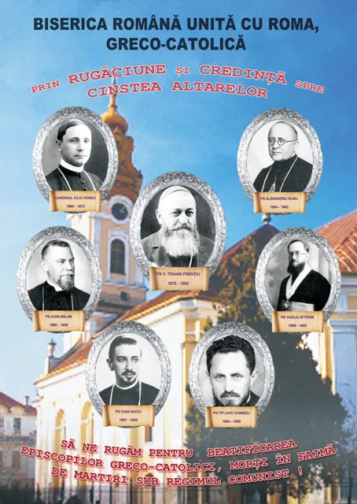

„Hoće li tko za mnom, neka se odreče samoga sebe, neka uzme svoj križ i neka ide za mnom.” (Mt 16,24)

Prigodom svojeg boravka u Rumunjskoj, papa Franjo je u nedjelju, 2. lipnja 2019, u nazočnosti 100 tisuća vjernika na prostranom Polju slobode u gradu Blaju (okrug Alba, Transilvanija) proglasio blaženima sedmoricu grkokatoličkih biskupa, mučenika komunističkog režima. To su Valeriu Traian Frenţiu, Ioan Bălan, Alexandru Rusu, Iuliu Hossu, Vasile Aftenie, Tit Liviu Chinezu i Ioan Suciu. Ti su mučenici radije žrtvovali svoj život nego slobodu savjesti. Neizmjerno su trpjeli i borili se protiv prisilnih mjera ideološkog sustava, koji nije poštivao temeljna ljudska prava. U njihovo vrijeme katolička zajednica u Rumunjskoj bila je, kao i katolička zajednica u hrvatskim krajevima, izložena teškim iskušenjima diktatorskog i ateističkog režima. Nakon II. svjetskog rata rumunjske komunističke vlasti zaplijenile su imovinu Grkokatoličke crkve te njezinim pripadnicima naredile da se priključe većinskoj Pravoslavnoj crkvi. Svi biskupi grkokatoličkog i latinskog obreda bili su zatvoreni. Sedmorica ovih blaženika bili su uhićeni u noći s 28. na 29. listopada 1948. i strpani u zavor. Optužili su ih za veleizdaju jer su odbili prijeći na pravoslavnu vjeru. U zatvoru su ih sustavno mučili i ponižavali. Izolirali su ih u jednom pravoslavnom samostanu, a potom zatvarali u različite tamnice. Kad su umrli, pokapani su potajice kako bi se spriječilo vjernike da ih spominju i pohađaju njihove grobove. Ni danas se ne zna gdje su pokopana tijela četvorice tih mučenika.
Među tim biskupima mučenicima bio je i kardinal Iuliu Hossu, koji je odlučio ostati uz svoje vjernike i odustao od premještaja u Rim. On je tada izjavio svojim istražiteljima: „Naša vjera je naš život!“ Veličanstven primjer rumunjskih grkokatoličkih biskupa mučenika na najbolji mogući način svjedoči o vjernosti kršćanskog Istoka Petrovom nasljedniku te o vrijednosti i ravnopravnosti Grkokatoličke crkve kao jednako važnog plućnog krila kojim diše univerzalna Katolička crkva „koju ni vrata paklena neće nadvladati“. Povjesničari kažu da je pedesetih i početkom šezdesetih godina oko pola milijuna rumunjskih državljana, među kojima je bilo političara, svećenika, liječnika, časnika, veleposjednika i trgovaca, osuđeno i zatvoreno. Petina ih je nestala u radnim logorima i zatvorima. Komunističke vlasti su nakon II. svjetskog rata dokinule Grkokatoličku crkvu te su sve njihove crkve predale na uporabu Pravoslavnoj crkvi. Nakon pada komunizma u Rumunjskoj je ponovno oživjela Grkokatolička crkva i dobila pravni status u državi, ali joj je do sada vraćeno tek oko 10 posto oduzetih crkava. Ponovno ujedinjenje s Rimom dogodilo se 14. ožujka 1990. Prema posljednjim podacima u Rumunjskoj na 20 milijuna stanovnika živi oko 900 tisuća rimokatolika i oko 150 tisuća grkokatolika. Grkokatolici su većinom Rumunji, a rimokatolici Mađari, Rumunji, Nijemci i Romi te niz manjih nacionalnih skupina.